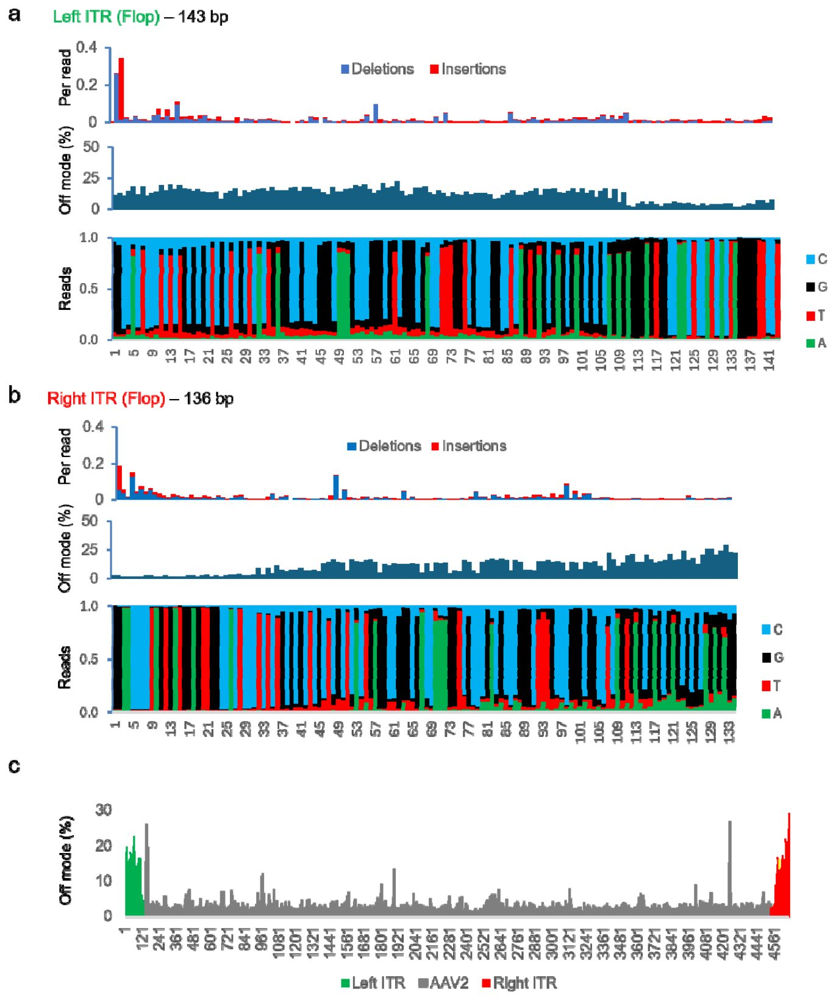
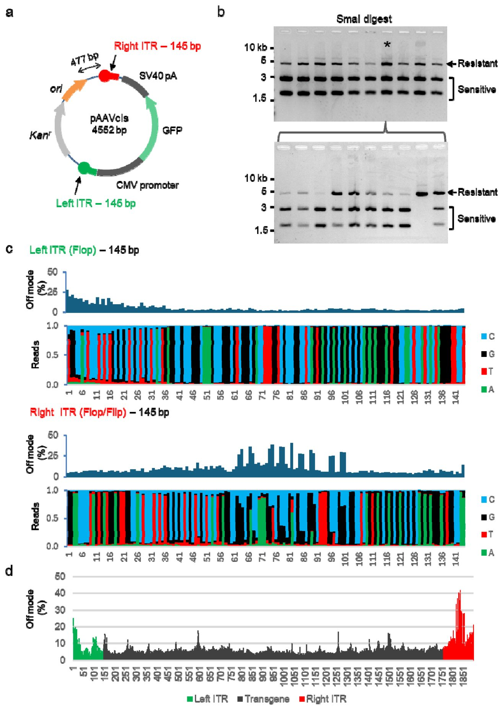
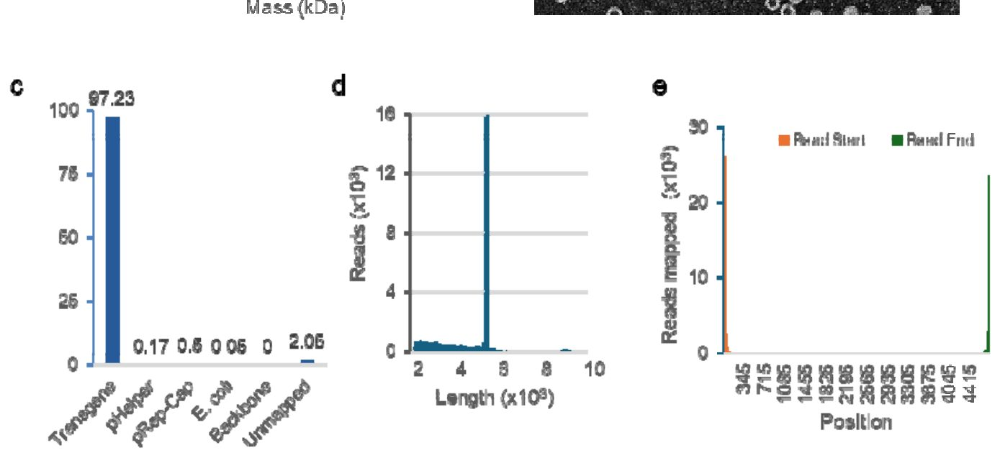
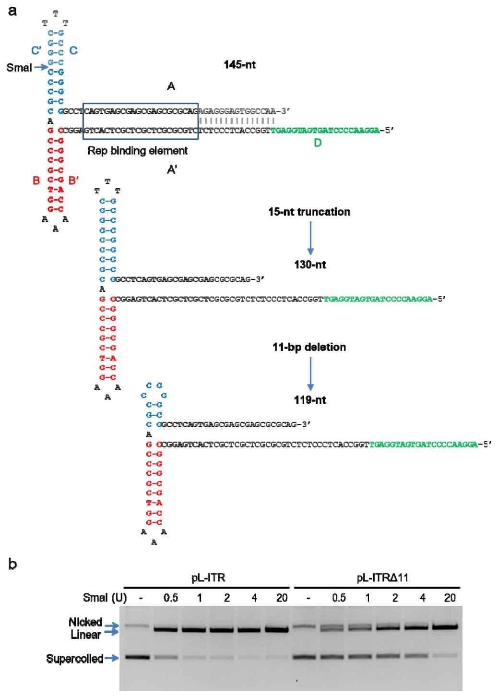

ДНК конструкторындағы бір бөлшек гендік терапияға арналған дәрілердің өндірісін қалай бұзады

Суреттің толық сипаттамасы
1-сурет. Бастапқы AAV2 плазмидалары. (a) Бір тізбекті AAV2 ДНҚ геномы ITR-мен шектелген екі транскрипциялық бірліктен, rep және cap тұрады. Қос тізбекті ДНҚ контекстінде әрбір ITR сызықтық немесе крест тәрізді құрылымды түзе алады. (b) Бастапқы AAV2 изоляты pSM620 psub201 алу үшін пайдаланылды. Жабайы типтегі 145-б.ж. ITR клондау процесінде 130-б.ж. дейін қысқартылды. Rep және cap гендерін шектейтін XbaI сайттары эндогендік геномдық элементтерді трансгендік кассеталармен алмастыруға мүмкіндік берді. Сэнгер бойынша секвенирлеу үшін қолданылған праймерлердің салыстырмалы орналасуы көрсеткіштермен белгіленген. (c) SmaI арқылы өңдеу pSM620 және psub201 эталондық қорларынан бөлінген жеке клондар арасындағы ITR гетерогенділігін анықтайды. (d) c панелінде талданған pSM620 клондары жойылған ITR-ді анықтау үшін SmaI және BamHI ферменттерімен өңделді.
Гендік терапияға арналған препараттарды жасау бактериялардағы вирустық дайындамалардың тұрақсыздығынан жиі лотереяны еске түсіреді. Емдік вирустарды жинауға қажетті ДНК-ның ерекше шеткі құрылымдары көбею кезінде үнемі мутацияға ұшырап, қысқарып отырады. Зерттеушілер бұл мәселенің плазмидалардың — сақиналы ДНҚ молекулаларының архитектурасымен тікелей байланысты екенін анықтады. Плазмида ішіндегі элементтердің өзара орналасуын өзгерту терапиялық генді зақымданудан толық қорғауға мүмкіндік береді.
Басты ойлар
- Гендік терапия плазмидаларындағы ITR қайталанулары репликация басталу нүктесіне жақын болғандықтан нуклеотидтерін жоғалтады
- Addgene жаһандық репозиторийіндегі зерттелген плазмидалардың шамамен 68%-ында 11 нуклеотид жұбынан тұратын жасырын мутация бар
- Репликация басталу нүктесі мен ITR арасындағы қарапайым буферлік кірістіру көбею кезінде ДНҚ құрылымын толық тұрақтандырады
Толығырақ
Рекомбинантты аденоассоциацияланған вирустар (rAAV) қазіргі медицинада гендерді жеткізудің негізгі құралы болып табылады. Олар бактериялық плазмидалар (сақиналы ДНҚ молекулалары) көмегімен өндіріледі, онда нысаналы ген инвертирленген шеткі қайталанулар (ITR, Т-тәрізді шаш қыстырғыш құрылымдарды түзе алатын ұзындығы 145 нуклеотидті ДНҚ учаскелері) арасында қысылып тұрады. Күрделі кеңістіктік құрылымына байланысты ITR тізбектері Escherichia coli бактерияларында репликация (көбею) кезінде жиі делецияға (ДНҚ учаскелерінің түсіп қалуына) ұшырайды. Авторлар Oxford Nanopore секвенирлеу деректерін талдауға арналған биоинформатикалық конвейер әзірлеп, әртүрлі плазмидалардағы ITR тұрақтылығын зерттеді.
7041 rAAV плазмидасы бар Addgene дерекқорын талдау олардың 4773-інде ұзындығы 11 нуклеотид жұбынан тұратын бірдей делеция бар екенін көрсетті. Мутацияға негізінен плазмиданың репликация басталу нүктесіне (ori) жақын орналасқан ITR ұшырайтыны белгілі болды — 95,3% жағдайда ақау дәл осы жерде анықталды. Бұл мәселені шешу үшін авторлар жаңа pAAV2ST векторлық жүйесін жасап шығарды, онда ori нүктесі тұрақсыз қайталанудан ұзындығы 1320 нуклеотид жұбынан тұратын буферлік кірістіру арқылы алыстатылды. Бұл өлшемі 4750 нуклеотид жұбын құрайтын ірі CRISPR-Cas9 кассетасын шығынсыз көбейтуге және вирус капсидтеріне орауға мүмкіндік берді.
Шектеулер
Жұмыс препринт түрінде жарияланған және әлі тәуелсіз рецензиялаудан өтпеген, ал ITR мутацияларының жасуша ДНҚ-сына кірігуіне әсері әзірге тек in vitro алдын ала сынақтарында ғана көрсетілген.
Мақаланың толық аудармасы
Түйіндеме
Аденоассоциацияланған вирустардан (rAAV) алынған рекомбинантты векторлар адамның гендік терапиясының негізі болып табылады. rAAV құрамында инверттелген терминалды қайталанымдармен (ITR) шектелген трансгендік кассеталары бар плазмидалардан өндіріледі. Бұл ITR-лер бір тізбекті вирустық геномның ұштарын тұрақтандыратын және геномды қаптау үшін қажетті жалғыз цис-орналасқан вирустық тізбектер болып табылады. Онжылдықтар бойы ITR құрамындағы плазмидалардың көбеюі делециялар мен басқа да мутацияларға әкелуі мүмкін екені белгілі болды, бұл арнайы бактериялық штаммдарды, модификацияланған өсіру жағдайларын және қысқартылған немесе өзгертілген ITR-лерді қолдануға итермеледі. Осы тәжірибелерге қарамастан, ITR тұрақсыздығы плазмидалар гетерогенділігінің тұрақты көзі болып қала береді.
Маңызды
rAAV плазмидаларындағы ITR тұрақсыздығы олардың архитектурасына байланысты, бұл ретте делециялар көбінесе репликацияның басталу нүктесіне ең жақын орналасқан ITR-де орын алады.
ITR тұрақтылығының детерминанттарын анықтау үшін біз бастапқы клондалған AAV2 геном изоляттарының бірінде, қайта құрылған AAV2 плазмидасында және толық ұзындықтағы табиғи AAV2 ITR-лері бар синтетикалық rAAV векторында ITR тұтастығын бағаладық. Біз Oxford Nanopore секвенирлеу деректері негізінде ITR құрамындағы плазмидалар мен вирустық препараттарды талдау үшін сандық биоинформатикалық жұмыс процесін құрдық. Бұл эксперименттер ITR-лердің қысқа мерзімді культивация кезінде жоғары тұрақты болғанын, ал ұзақ мерзімді культивация плазмида репликациясының басталу нүктесіне ең жақын ITR-дің жоғалуы немесе мутациясымен сипатталатын күшті позициялық әсерлерді көрсеткенін анықтады.
Осы модельге сәйкес, Addgene репозиторийіндегі секвенирлеу арқылы расталған 7 041 AAV плазмидасын зерттеу 4 773 плазмидада кең таралған 11 п.н. ITR делециясын анықтады; талдауға жарамды екі ITR-і бар плазмидалар арасында бұл делеция 95,3% жағдайда репликацияның басталу нүктесіне жақын ITR-де орналасқан. Осы нәтижелерге сүйене отырып, біз 4 750 п.н. көлеміндегі «all-in-one» CRISPR-Cas9 кассетасын тиімді қаптауға мүмкіндік беретін тұрақты толық ұзындықтағы табиғи AAV2 ITR-лері бар жаңа rAAV векторын құрастырдық. Соңында, біз ITR мутацияларының rAAV геном интеграциясына әсерін салыстыру үшін жасушалық стратегияны әзірледік және ITR тізбегіндегі вариациялар интеграция нәтижелеріне әсер ете алатыны туралы алдын ала дәлелдер ұсындық. Жиынтығында, бұл нәтижелер ITR тұрақсыздығы плазмида архитектурасының алдын алуға болатын, позицияға тәуелді қасиеті екенін көрсетеді және ITR тұтастығын rAAV векторларын жобалау мен сапаны бақылаудағы маңызды айнымалы ретінде анықтайды.
Кіріспе
Рекомбинантты аденобайланысты вирустар
Аденобайланысты вирус серотипі 2 (AAV2) негізінде алынған рекомбинантты AAV-лар гендік терапияда вектор ретінде кеңінен қолданылады. Модификацияланбаған AAV2 4,7 кб болатын бір тізбекті ДНҚ геномынан тұрады, ол ~20 нм икосаэдрлік капсид арқылы жеткізіледі. Нативті геном инверттелген терминалды қайталаулармен (ITR) шектелген екі негізгі ашық оқу рамкасын кодтайды. Бұл 145 нт ұзындығындағы элементтер екінші ДНҚ тізбегінің синтезін бастайтын және геномды капсидтеу кезінде орау сигналдары қызметін атқаратын қорғаныш Т-тәрізді дуплексті құрылымдарды түзеді.
AAV2 вирустық геномын 40 жылдан астам уақыт бұрын сәтті клондау рекомбинантты плазмидтен инфекциялық вирусты бөліп алуға мүмкіндік берді. ITR-лер орау үшін cis-позициясында қажетті жалғыз вирустық элементтер болып табылады; қалған вирустық компоненттерді трансген кассеталарымен алмастыруға болады. Бұл «геномсыз» рекомбинантты геномдарды қажетті AAV және аденовирус гендерін trans-позициясында енгізу арқылы орауға болады. Іс жүзінде, rAAV орау әдетте AAV2 ITR-лерін қамтитын cis-плазмидтік векторды комплементарлы AAV және аденовирустық элементтерді экспрессиялайтын плазмидтермен бірге котрансфекциялау арқылы орындалады. Жекелеген AAV серотиптерінің әртүрлі тропизмін пайдалану үшін зерттеушілер AAV2 ITR-лерімен шектелген трансгендерді әртүрлі табиғи және инженерлік капсидтерге сәтті орады, бұл псевдотиптеу деп аталады. Зерттеу және терапиялық мақсаттарда rAAV векторлары бөлінетін және бөлінбейтін жасушаларды инфекциялау қабілеті, эписомальды персистенциясы және қолайлы қауіпсіздік профилі үшін бағаланады.
Маңызды
AAV2 негізіндегі rAAV векторлары әртүрлі тропизмі бар капсидтерге трансгендерді орау қабілеті арқасында гендік терапияның стандарты болып табылады, алайда оларды өндіру құрамның гетерогенділігі мәселелеріне тап болады.
Өндірістік мәселелер және rAAV гетерогенділігі
Көптеген технологиялық жетістіктерге қарамастан, rAAV-ны ірі көлемде өндіруде күрделі мәселелер сақталуда. Гомогенділік пен қайталанғыштық клиникалық қолдану үшін өте маңызды факторлар болып табылады. rAAV өндірісінде қолданылатын реагенттер мен әдістерді стандарттау бойынша тұрақты күш-жігерге қарамастан, жекелеген вирустық препараттар ішіндегі гетерогенділік және препараттар арасындағы вариабельділік мәселелі болып қалуда. Вирустық қорлар әдетте функционалды вириондар мен ақаулы бөлшектердің ауыспалы қоспасынан тұрады. rAAV-ның функционалды емес бөлшектерінің үлесі препараттар арасында айтарлықтай өзгеруі мүмкін және әдетте бос капсидтер мен делециялары немесе ластаушы тізбектері бар бір тізбекті ДНҚ геномдары бар вириондарды қамтиды. Клиникалық қолдану үшін ақаулы бөлшектер тиімділікті төмендетіп, емдеуге байланысты уыттылықты арттыруы мүмкін.
rAAV препараттарындағы маңызды ластаушылардың бірі — cis-плазмидтің қаңқасы. Функционалды емес вириондар кері орау деп аталатын құбылыс арқылы түзілуі мүмкін, мұнда қажетті кірістірудің орнына плазмидтің қаңқасы оралады және тек бір ITR-і бар snapback-геномдар деп аталатын құрылымдар түзіледі. Snapback-геномдар шектелген трансгеннен тыс ITR-ге ұқсас тізбектерден туындайтыны көрсетілген, олар іс жүзінде репликаза кешені үшін жасырын рұқсат сайттарын жасайды.
rAAV препараттарындағы гетерогенділіктің тағы бір әлеуетті көзі оларды өндіру үшін қолданылатын rAAV cis-плазмидті қорларының біркелкі еместігі болып табылады. Стандартты cis-плазмидтерде көбейтілетін AAV ITR-лерінің тұрақсыз болу үрдісі жақсы құжатталған. Кеңірек мағынада, жоғары құрылымды вирустық тізбектер және қайталанатын элементтердің көптеген түрлері рекомбинантты плазмидтік векторларда көбейтілгенде жиі делециялар мен мутациялардың басқа түрлерін жинақтайды. ITR тұрақсыздығы әдетте олардың палиндромдық құрылымы мен жоғары GC мөлшеріне байланысты деп саналады, бұл оларды шаш тәрізді құрылымдарды түзуге және репликацияның тоқтауына бейім етеді. ITR мутациялары rAAV орау тиімділігін, өнімділігін және in vivo тиімділігін бұзуы мүмкін. ITR ақауларын азайту үшін өндірушілер әдетте әртүрлі модификацияланған культивация шарттарын, мысалы, төмендетілген температурада өсіруді пайдаланады және мамандандырылған штамдарды қолданады. Осы шараларға қарамастан, қайталанатын элементтердің тұрақты көбеюі мәселелі болып қалуда.
Түсіндірме
ITR (инверттелген терминалды қайталаулар) — бұл вирус геномының ұштары, олар репликация және вирустық ДНҚ-ны орау үшін қажетті екінші реттік құрылымдарды (шаш тәрізді құрылымдар) түзеді.
Плазмид конфигурациясының ITR тұрақтылығына әсері
AAV2-ні құтқару бойынша ең алғашқы эксперименттерге ретроспективті көзқарас екі ITR-дің плазмидтік векторларда көбейтілгенде мутацияға бейімділігі бойынша ерекшеленетінін көрсетеді. Екі ITR-дің репликацияның басталуына қатысты орналасуы ITR тұрақсыздығына ықпал ететіні болжанған. Бұл зерттеуде біз плазмид конфигурациясы AAV2 изоляттарында және синтетикалық rAAV векторларында ITR тұрақсыздығына қалай әсер ететінін егжей-тегжейлі зерттеуге мүмкіндік беретін жұмыс процесін орнаттық. Төмен көшірмелі және жоғары көшірмелі векторларда да ITR тұрақтылығы ITR-лердің плазмидтің репликация басталуына қатысты орналасуымен байланысты екені анықталды. Қарапайым векторлық модификация осы позициялық эффектіні жойды және плазмид тұрақтылығын қалпына келтірді.
Маңызды
Плазмидтердегі ITR тұрақтылығы олардың репликацияның басталу нүктесіне қатысты орналасуына байланысты; осы конфигурацияны өзгерту тұрақсыздықты толығымен жоюға мүмкіндік береді.
Нәтижелер
ITR-дің бастапқы AAV2 плазмидаларындағы сипаттамасы
Табиғи AAV2 геномын клондау бір тізбекті геномды екі тізбекті плазмидалық кірістіруге түрлендіруді талап етті. Бұл формада ITR-лер өздігінен оралып, крест тәрізді құрылымды қабылдауы немесе комплементарлы ДНҚ тізбегімен сызықтық дуплекс түзуі мүмкін (1a-сурет). AAV2 кірістіруінен тыс плазмидалық элементтердің бұл құрылымдық тепе-теңдікке қалай әсер ететінін немесе ITR тұрақтылығына басқаша әсер ететінін анықтау үшін біз алғашқы клондалған AAV2 изоляттарының бірі pSM620 плазмидасын зерттедік. Сондай-ақ, біз pSM620 туындысы psub201 плазмидасын тексердік, ол екі ITR арасындағы бүкіл аймақты трансгендік жүкпен алмастыруға мүмкіндік беретін XbaI рестрикция сайттарын қамтиды (1b-сурет). psub201 плазмидасы қазіргі уақытта rAAV өндірісі үшін кеңінен қолданылатын көптеген gutless векторларының ізашары болды.
Маңызды
pSM620 және psub201 плазмидаларын талдау ITR-лердің құрылымдық тұрақсыздығын анықтады: 8 изоляттың 3-уі SmaI рестрикциясына төзімді ITR-лерді қамтыды, бұл тізбектегі делецияларды немесе зақымдануларды көрсетеді.
pSM620 және psub201 ДНҚ-ларының бақылау үлгілері бактериялық трансформация және жеке колонияларды егу арқылы күшейтілді. Әрбір табақшадан кездейсоқ төрт колония таңдалып алынды және кіші көлемде бір түн бойы өсірілді. Экстракцияланған ДНҚ-лар алдымен рестрикциялық талдау әдісімен талданды. Әрбір ITR SmaI рестриктазасы үшін екі тану сайтын қамтиды (1a-сурет), ол әдетте ITR тұтастығын бағалау үшін қолданылады. Сегіз плазмидалық изоляттың үшеуі SmaI-ға төзімді ITR-ді қамтыды (1c-сурет). pSM620 субклондарының қос рестрикциялық талдауы ақаулы ITR-лері бар екі клонның әрқайсысы бір зақымдалған ITR-ді сақтап қалғанын көрсетті (1d-сурет).
SmaI-мен толық ыдыратылуы мүмкін pSM620 және psub201 изоляттары кейіннен Сэнгер секвенирлеу әдісімен бағаланды. AAV ITR-лерінің екінші реттік құрылымы ұзақ уақыт бойы оларды секвенирлеуде кедергі болып келді, бірақ жетілдірілген әдістер қазір GC-бай шпилькалар және басқа да жоғары құрылымдалған тізбек мотивтері арқылы праймерлерді сенімді ұзартуға мүмкіндік береді. AAV2 геномында оралған праймерлерді пайдаланып (1b-сурет), біз екі плазмидада да екі ITR-де SmaI сайттарының бар екенін растадық. Алайда, бірдей праймерлер қолданылғанына қарамастан, әр плазмидадағы ITR-лер арасында тізбек сапасы әртүрлі болды. pSM620 матрицасы оң жақ ITR үшін жоғары сапалы тізбекті берді, ал сол жақ ITR үшін негіздерді анықтау сенімділігі тұрақты түрде төменірек болды (2a-сурет). psub201 плазмидасы үшін кері жағдай байқалды; бұл жағдайда оң жақ ITR салыстырмалы түрде төмен сапалы тізбек деректерін берді, бірақ соған қарамастан, 21 п.н. көлеміндегі делецияны анықтау үшін жеткілікті болды (2b-сурет).
Түсіндірме
Сэнгер секвенирлеуі — тізбек терминаторларын пайдалануға негізделген ДНҚ тізбегін анықтау әдісі, ол GC-бай аймақтарды дәл оқу үшін жоғары сапалы матрицаны талап етеді.
Плазмидалық матрицаның гетерогенді тізбектері деп есептелген нәрселерді деконволюциялау үшін pSM620-дағы ITR элементтері ұзақ оқылымды ДНҚ секвенирлеуі арқылы жеке молекулалар деңгейінде қосымша сипатталды. Минималды сапа шегінен өткен Nanopore оқылымдары екі ITR бойы да гомогенді болды (3a, b-сурет). Бұл талдау 143 п.н. көлеміндегі сол жақ ITR және 136 п.н. көлеміндегі оң жақ ITR-ді анықтауға мүмкіндік берді, екеуі де flop бағытында. Сол жақ ITR-дің 5’-ұшында екі негіз, ал оң жақ ITR-дің 3’-ұшында тоғыз негіз жетіспеген. Оқылымдардың аз ғана бөлігі кіші индельдерді қамтыды, олар сол жақ ITR-дің 5’-ұшында ең жоғары жиілікте кездеседі (3a-сурет). Жалпы алғанда, ITR аймақтары ең жоғары дәрежедегі гетерогенділікті көрсетті, бұл оқылымдар қаптамасындағы қате негіз шақыруларымен расталады (3c-сурет).
pSM620 реконфигурациясы
Сэнгер хроматограммаларының асимметриялық сапасы pSM620 матрицасының негізгі реттілігінен көрінбегендіктен, сол жақ ITR арқылы Сэнгер бойынша секвенирлеудің нашар сапасы праймер элонгациясының құрылымдық шектеулеріне байланысты болуы мүмкін бе деген мәселені зерттедік. pSM620 және psub201 екеуінде де ақаулы ITR плазмиданың репликация басталу нүктесіне (ori) көршілес орналасқан еді (Сурет 1b). ColE1 типті репликация басталу нүктесі саналатын pMB1 ori элементі плазмиданың көшірме санын бақылайтын екі қысқа РНҚ түзеді. Біз осы жоғары құрылымдалған РНҚ-ларға арналған матрицалық элементтерге жақындық секвенирлеу деректеріндегі сәйкессіздікке себеп болуы мүмкін бе деп болжадық.
Суреттің толық сипаттамасы
1-сурет. Бастапқы AAV2 плазмидалары. (a) Бір тізбекті AAV2 ДНҚ геномы ITR-мен шектелген екі транскрипциялық бірліктен, rep және cap тұрады. Қос тізбекті ДНҚ контекстінде әрбір ITR сызықтық немесе крест тәрізді құрылымды түзе алады. (b) Бастапқы AAV2 изоляты pSM620 psub201 алу үшін пайдаланылды. Жабайы типтегі 145-б.ж. ITR клондау процесінде 130-б.ж. дейін қысқартылды. Rep және cap гендерін шектейтін XbaI сайттары эндогендік геномдық элементтерді трансгендік кассеталармен алмастыруға мүмкіндік берді. Сэнгер бойынша секвенирлеу үшін қолданылған праймерлердің салыстырмалы орналасуы көрсеткіштермен белгіленген. (c) SmaI арқылы өңдеу pSM620 және psub201 эталондық қорларынан бөлінген жеке клондар арасындағы ITR гетерогенділігін анықтайды. (d) c панелінде талданған pSM620 клондары жойылған ITR-ді анықтау үшін SmaI және BamHI ферменттерімен өңделді.
pSM620 плазмидасы бастапқыда терминалдық гомополимерлік тізбектерді жалғауды қамтитын қармау стратегиясы арқылы тазартылған AAV2 геномын pBR322-нің PstI сайтына енгізу жолымен алынған болатын. Бастапқы pBR322 плазмидасындағы енгізу сайты pMB1 ori элементінен 500 ж.ж.-ден аз қашықтықта орналасқан (Сурет 4a). Репликация басталу нүктесінің көршілес ITR-ларға ықтимал позициялық әсерін зерттеу үшін, біз NheI және BamHI ферменттерімен кесілген pBR322 векторына AAV2 кассетасын енгізу арқылы жаңа плазмидалар құрастырдық. Алынған pBR-AAV2(+) және pBR-AAV2(-) плазмидалары екі бағытта да екі 145 ж.ж. ITR-ды қоса алғанда, толық AAV2 геномын қамтыды. Орны ауыстырылған және толық қалпына келтірілген ITR-лар pMB1 ori нүктесінен 1457 ж.ж. немесе 2144 ж.ж. қашықтықта орналасты (Сурет 4a).

Суреттің толық сипаттамасы
4-сурет. pSM620-ны қайта қарау. (a) Бастапқы AAV2 изоляты pSM620 pBR322 клондау векторының PstI сайтында ұсталды, осылайша ампициллинге төзімділік генін бұзды. ITR-лердің ori элементіне (қызғылт сары көрсеткіш) қатысты орналасуын өзгерту үшін AAV2 геномы көрсетілгендей NheI-BamHI кірістіруі ретінде қайта құрылды. Алынған pBR-AAV2(-) плазмидасы ori элементінің бағытына қатысты pSM620-мен бірдей бағыттағы кірістіруге ие. Екінші плазмида, pBR-AAV2(+), AAV2 кірістіруін қарама-қарсы бағытта қамтиды және көрсетілмеген. Жақшадағы сандар pBR322-дегі нуклеотидтік позицияларға қатысты. (b) Сэнгер бойынша секвенирлеу 1b-суретте көрсетілген праймерлермен орындалды. Әрбір позициядағы нуклеотидті анықтаудың сенімділігі әріптердің биіктігімен көрсетілген. SmaI тану сайттары асты сызылған. (c) pBR-AAV2(-) сол және оң жақ ITR-лері бойынша нанопорлы секвенирлеуді жинақтау талдауы.
Түсіндірме
ITR (төңкерілген терминалды қайталанулар) күрделі ілмек тәрізді құрылымдар түзеді, ал олардың ori реттеуші РНҚ элементтеріне тым жақын орналасуы репликация мен полимераза жұмысына кедергі келтіруі мүмкін.
pBR-AAV2(+) және pBR-AAV2(-) құрамындағы ITR-лар pSM620 және psub201 алдыңғы талдауында қолданылған праймерлер мен жағдайларда Сэнгер секвенирлеуі арқылы бағаланды. AAV2 кірістірмесінің бағытына қарамастан, екі ITR да Сэнгер хроматограммаларында анық көрінді (Сурет 4b). ONT деректерін үйіп талдау (pileup) екі ITR бойынша да гетерогенділіктің төмен деңгейін көрсетті (Сурет 4c).
Одан кейін біз ұзақ дақылдау кезіндегі ITR тұрақтылығын бағаладық. Біз pSM620 мен репликация басталу нүктесіне қатысты AAV2 кассетасы бірдей бағытта орналасқан pBR-AAV2(-) плазмидасын салыстырдық (Сурет 4a). SmaI арқылы гидролиз жасап талдау 72 сағат бойы екі плазмиданың да құрылымдық тұрғыдан бұзылмағанын, ешқандай айқын делециялар немесе қайта құрылулар болмағанын көрсетті (Сурет 5a). Төрт тану сайтының барлығы ДНҚ секвенирлеу арқылы расталғанына қарамастан (Сурет 4b), SmaI ферменті pSM620 плазмидасын толық кесе алмады. Сонымен қатар, pSM620-ны ұзақ дақылдау SmaI-ге төзімді ДНҚ-ның салыстырмалы үлесінің біршама артуына әкелгендей болды (Сурет 5a). 72 сағаттық дақылдан бөлініп алынған pSM620 ДНҚ-сының ұзын оқылымды секвенирлеуі сол жақ ITR-дың 5'-ұшынан 6 ж.ж. жоғалғанын анықтады, бірақ өзгеше субклоналды плазмидалық популяциялардың кеңею белгілерін көрсетпеді (Сурет 5b).

Суреттің толық сипаттамасы
5-сурет. Ұзақ уақыт культивациялау кезіндегі AAV2 плазмидаларының тұрақтылығы. (a) Сұйық бактериялық дақылдар 72 сағат бойы үздіксіз инкубацияланды. 24 сағаттық аралықпен әрбір дақылдың аликвоты жаңа қоректік ортаға 1:1000 қатынасында сериялық сұйылтылды. Әрбір уақыт нүктесінде алынған ДНҚ SmaI ферментімен өңделді. (b) 72 сағаттық үздіксіз культивациядан кейін pSM620-дағы сол және оң жақ ITR-лер бойынша кірістірулер мен делецияларды талдау. (c) 72 сағаттық дақылдар жаңа табақшаларға егілді және 10 колония түнгі дақылдарда жеке көбейтілді. Алынған плазмидалық ДНҚ SmaI ферментімен өңделді. Жұлдызшалармен (*) белгіленген дақылдар субклоналды талдаудың екінші кезеңі үшін егілді. (d) c панелінде көрсетілгендей, pSM620 4-клонының сол және оң жақ ITR-лері бойынша нанопорлы секвенирлеуді жинақтау талдауы.
Ұзақ уақыт дақылдау кезіндегі тұрақтылықты тереңірек бағалау үшін біз 72 сағаттық ДНҚ үлгілерін бактерияларды трансформациялау үшін пайдаландық және кейін кездейсоқ 10 антибиотикке төзімді колонияны жеке өсірдік. Бөлініп алынған ДНҚ-лар SmaI кесуі арқылы тексеріліп, субклондар арасындағы өзгергіштік анықталды (Сурет 5c). Кесілмеген ДНҚ үлесі ең көп pSM620 изоляты (клон 4) әрі қарай қайта субклондалды. SmaI кесу нәтижесі осы субклондар арасында ITR делециясының жоғары жиілігін көрсетті. Керісінше, pBR-AAV2(-) туындысы болған субклондар тіпті екінші раундтық субклондау мен өсіруден кейін де салыстырмалы түрде біртекті (гомогенді) болып қалды (Сурет 5c). Клон 4 плазмида популяциясындағы гетерогенділік ұзын оқылымды секвенирлеу арқылы оңай анықталды (Сурет 5d) және толығымен сол жақтағы, ori-ге жақын ITR-ға ғана тән болды.
Маңызды
pBR-AAV2(-) плазмидасында ITR қайталануларын ori репликация басталу нүктесінен 1,4 мың ж.ж.-ден астам қашықтыққа жылжыту құрылымды тұрақтандырып, pSM620-да кеңінен орын алған делециялардың алдын алды.
Жоғары көшірмелі плазмидадағы 145 ж.ж. ITR тұрақтылығы
Бүгінгі таңда кеңінен қолданылатын rAAV векторлары плазмидаларды жоғары көшірме санында сақтауға мүмкіндік беретін мутантты pMB1 репликация ориджиніне ие. Жоғары көшірмелі плазмида контекстінде ITR тұрақтылығын бағалау үшін біз cis-векторын de novo құрастырдық. Ұзындығы 145 ж.ж. оң жақ ITR және 145 ж.ж. сол жақ ITR pUC57 бэкбонында бөлек синтезделді, екеуі де pSM620 конформациясына сәйкес келу үшін flop ориентациясында алынды. Содан кейін бұл екі плазмида жасыл флуоресцентті белок (GFP) экспрессиялық кассетасы екі ITR-мен көмкерілген pAAVcis cis-плазмидасын жинау үшін пайдаланылды (6a-сурет).
pUC клондау векторлар сериясы жоғары көшірмелі pMB1 ориджиніне жақын орналасқан көптік клондау сайтымен сипатталады. pUC57-KAN-нан алынған pAAVcis плазмидасында ориджин оң жақ ITR енгізу сайтынан 477 ж.ж. қашықтықта бөлінген (6a-сурет). pBR322 негізіндегі плазмидаларды талдау үшін қолданылған итеративті субклондау стратегиясын пайдалана отырып, біз ITR делециялары бар pAAVcis клондарын бөліп алдық. ITR тұрақтылығын және pAAVcis плазмидалық популяциясының гомогенділігін бағалау үшін біз трансформацияланған бактерияларды шекті сұйылтуда егіп, әрі қарай талдау үшін 10 канамицинге төзімді субклондарды өсірдік (6b-сурет). SmaI ферментімен гидролиздеу pAAVcis субклондары арасында SmaI-сезімтал және SmaI-төзімді ДНҚ-ның әртүрлі пропорциялары бар айқын ауытқуларды анықтады.
Маңызды
> Жоғары көшірмелі pAAVcis плазмидасында ұзақ өсіру кезінде репликация ориджиніне жақын орналасқан оң жақ ITR ~27% инверттелген flip-изомерлерін түзе отырып өздігінен дивергенцияланады, ал алыстағы сол жақ ITR тұрақты flop-конформациясын сақтайды (>99%).
Ыдырамаған материалдың пропорционалды емес жоғары деңгейін берген бір клон (7-клон; 6b-сурет) нанопоралық секвенирлеу әдісімен қосымша бағаланды. Сол жақ ITR бойындағы оқылымдар салыстырмалы түрде бірдей болды, бірақ ori-ге іргелес оң жақ ITR-ге карталанған оқылымдар арасында едәуір жүйелілік гетерогенділігі байқалды (6c-сурет). Қызығы, жүйелілік талдауы оң жақ ITR аймағында flip және flop изомерлерінің қоспасын анықтады. pSM620-дағы flip-flop конфигурациясынан айырмашылығы, pAAVcis-тегі екі ITR да flop бағытында жасалған, сондықтан бірдей болды. Ұзақ уақыт көбейтуден кейін плазмида молекулаларының шамамен 27%-ы ori-ге жақын оң жақ ITR-дің ішкі ілмегінде айқын жүйелілік нұсқасын сақтады, мұндағы ішкі ілмектегі 17 информативті позицияның әрқайсысы flip бағыты бар минорлы популяцияны көрсетті (6c-сурет). Керісінше, ориджиннен алыс о сол жақ ITR гомогенді түрде flop бағытында қалды (тиісті позицияларда < 1% flip). Бұл деректер таза pAAVcis плазмидалық популяциясының ориджинге жақын ITR-де flip және flop ITR конфигурациялары пайда болып, плазмидалар қоспасына дивергенцияланғанын көрсетеді. Бүкіл rAAV ендірмесі бойынша жүргізілген талдау гетерогенділіктің айқын пигі дәл оң жақ ITR ішінде орналасқанын көрсетті (6d-сурет).
Түсіндірме
> Нанопоралық секвенирлеу — мембранадағы белок тесіктері арқылы өту кезінде ДНҚ или РНК-ның жеке молекулаларын нақты уақыт режимінде оқу әдісі, бұл ПТР-амплификациясыз құрылымдық қайта құрылуларды және изомерлердің аралас нұсқаларын анықтауға мүмкіндік береді.
pAAV2ST: тұрақтандырылған rAAV клондау векторы
Әрі қарай біз pAAVcis плазмидасындағы оң жақ ITR-ді репликация ориджиніне дейінгі қашықтықты арттыру арқылы тұрақтандыруға болатын-болмайтынын тексердік. pBR322-ден тетрациклинге төзімділік гені бар 1 797 ж.ж. ДНҚ фрагменті pAAV2ST кіріс векторын алу үшін оң жақ ITR мен ориджин арасына енгізілді (7a-сурет). Терапевтік генді тасымалдауға арналған типтік rAAV-ге көбірек ұқсайтын конструкцияның тұрақтылығын бағалау үшін біз GFP экспрессиялық кассетасы бар 1 569 ж.ж. NotI ендірмесін бұған дейін Фэн Чжан және оның әріптестері тышқанның Pcsk9 локусын in vivo инактивациялау үшін жасаған «бәрі бірде» CRISPR/SaCas9 жүйесіне ауыстырдық (17). Нәтижесінде алынған pAAV2ST-Pcsk9sg1 плазмидасының жалпы мөлшері 8 722 ж.ж. құрады (7b-сурет).
Абайлаңыз
> pAAV2ST векторының тұрақтылығы бактериялық культураларда өсіру және аденоассоциацияланған вирустық капсидтерге қаптау кезінде расталды, алайда оның функционалдық тиімділігі мен қауіпсіздігі in vivo жағдайында қосымша тексеруді талап етеді.
pAAV2ST-Pcsk9sg1 векторы SmaI арқылы дерлік толық ыдырады және тізбекті өсіру кезінде құрылымдық жағынан тұрақты болып көрінді (7c-сурет). Капсуладау үшін үлкен ауқымда дайындалған плазмидалық ДНҚ үлгісі сызықтық түрлері анықталмай, негізінен аса иірілген формада болды (7d-сурет). Бұл популяциядан алынған субклондар SmaI гидролизінен кейін pBR-AAV2(-)-де бұрын байқалғандай, жоғары молекулалық ДНҚ-ның төмен үлесін көрсетті. Бұл жоғары амплификацияланған препаратты нанопоралық секвенирлеу мутантты субпопуляцияларды анықтаған жоқ. Екі ITR да оң жақ ITR-дің 3' ұшындағы фокальды аймақты қоспағанда, гомогенді болып көрінді (7e-сурет).
pAAV2ST-Pcsk9sg1 плазмидалық ендірмесі стандартты әдістерді қолдана отырып, коммерциялық өндіруші тарапынан AAV8 капсидтеріне қапталды. Өндіруші орындаған кПТР негізіндегі сапаны бақылау талдауына сәйкес, барлығы 5,61E+13 вирустық геномдар қапталды, бұл 1,0E+13 спецификациясынан едәуір асып түсті. Тазартудан кейін масса-фотометрия әдісімен бөлшектердің екі негізгі популяциясы ажыратылды. Бос капсидтерді көрсететін 3 700 кДа пигі популяцияның 29,5%-ын құрады; бөлшектердің 70,3%-ы 5 200 кДа пигінде ажыратылған толық капсидтер болды (8a-сурет). Содан кейін біз өз зертханамызда негативті бояу және ПЭМ көмегімен жеке капсидтерді визуализацияладық (8b-сурет). Бұл талдау капсидтердің 79,7 ± 3,0%-ы толық және 20,2 ± 3,0%-ы бос екенін көрсетті.
Маңызды
> pAAV2ST векторы AAV8 капсидтеріне қапталған кезде толық өлшемді вирустық геномның жоғары шығымын қамтамасыз етті (5,61E+13 геном; масса-фотометрия мен ПЭМ деректері бойынша ~70–80% толық капсидтер), бұл ретте қапталған ДНҚ-ның >98%-ы тұтас трансгендік кассетаға дәл сәйкес келді.
Нативті қапталған ДНҚ-ның тұтастығы жаңадан жасалған жұмыс ағынын қолдана отырып, тікелей нанопоралық секвенирлеу арқылы бағаланды. Алынған оқылымдардың 98%-дан астамы трансгендік кассетаға карталанды (8c-сурет) және мөлшері бойынша pAAVST-Pcsk9sg1 ендірмесінің толық ұзындығына сәйкес келді (8d,e-сурет).
Кеңінен таралған ITR мутациясы
ITR тұрақсыздығының маңызды салдары – мутантты субпопуляциялардың клоналды кеңеюі. ITR-дегі 11 п.н. (жұп негіз) жойылуы (бұдан әрі Δ11 деп аталады) бұрын кең таралған pAAV-MCS векторында анықталған болатын. Radukic және басқалардың Addgene репозиторийіндегі тізбегі расталған rAAV плазмидалары бойынша жақында жүргізген зерттеуі ішкі жойылған ITR-лердің жиі кездесетінін көрсетті. Біз Addgene-ге тапсырылған барлық плазмидалар арасында арнайы Δ11 ITR мутантының таралуын анықтауға және бұл мутация бактериялық репликацияның басталуымен (ori) тұрақты позициялық байланысты көрсететінін немесе жоқтығын білуге тырыстық.
Addgene плазмид репозиторийіндегі ITR тізбектерін бағалау үшін көп сатылы биоинформатикалық құбыр желісі орнатылды (9a-сурет). Тізбек деректері шамамен 1,34 Гб плазмид тізбегін қамтитын кешенді жалпыға ортақ Addgene жүктемесінен алынды. Метадеректерге негізделген скрининг AAV-мен байланысты 7 491 кандидат плазмиданы анықтады, олар кейіннен тізбек деңгейіндегі ITR анықтау арқылы бағаланды. Бұл талдау кемінде бір анықталатын AAV ITR-і бар 7 041 плазмиданы анықтады. Тізбегі тексерілетін AAV плазмидаларының көпшілігі екі болжамды ITR-ді қамтыды: 6 824 плазмида екі ITR-лі векторлар, 213-і бір ITR-лі векторлар және 4-еуі үш ITR-лі жазбаларға ұқсас векторлар ретінде жіктелді. Барлығы 13 873 ITR шақыруынан 13 752-сі (99,1%) flop изомерлері және (0,9%) flip изомерлері ретінде жіктелді.
Маңызды
Δ11 мутациясы талданған ITR-оң плазмидалардың 67,8%-ында анықталды, бұл ретте 95,3% жағдайда ол бактериялық репликацияның басталуына ең жақын ITR-де орналасқан.
Кейіннен біз Δ11 мутациясына сәйкес келетін 34 п.н. тізбегі үшін тәуелсіз нақты-мотив іздеуін жүзеге асырдық. Бұл іздеу кемінде бір нақты Δ11 мотиві бар 4 773 плазмиданы анықтады, бұл ITR-оң плазмидалардың 67,8%-ын және екі немесе одан да көп болжамды ITR-і бар плазмидалардың 69,8%-ын құрайды. Плазмида деңгейінде 4 763 плазмида бір нақты Δ11 мотивін қамтыды, ал тек 10-ы екі нақты Δ11 мотивін қамтыды. Нақты Δ11 мотивін қамтитын бірде-бір плазмида тізбегі анықталатын ITR-ден айырылған жоқ, бұл мотивке негізделген іздеудің ерекшелігін растайды.
Эксперименталды деректеріміз ITR тұрақсыздығына ori элементіне жақындық әсер ететінін көрсеткендіктен, біз Δ11 ITR-лері аннотацияланған репликацияның басталуына жақын жерде орналасқанын немесе жоқтығын сұрадық. GenBank аннотациялары бактериялық плазмид репликациясының басталуын анықтау үшін пайдаланылды және жалпы Addgene тізбектері мен GenBank файлдары арасындағы координаттар сәйкестігі тест жиынтығында расталды. Біз репликацияның басталуына жақындық талдауын дәл екі болжамды ITR және өкілді толық тізбегінде дәл бір нақты Δ11 мотиві бар плазмидалармен шектедік. 4 773 Δ11-оң плазмидадан 25-і осы критерийлерге жауап бермегені немесе талдауға келмегені үшін шығарып тасталды. Қалған 4 748 плазмида арасында Δ11-ді қамтитын ITR 4 524 жағдайда (95,3%) бактериялық репликацияның басталуына ең жақын ITR болды және 224 жағдайда (4,7%) репликацияның басталуына ең жақын болмады. Осылайша, мыңдаған тапсырылған AAV плазмид тізбектері бойынша Δ11 жойылуы репликацияның басталуына проксимальды ITR-де күшті байытылған, бұл асимметриялық, позицияға тәуелді ITR тұрақсыздығына сәйкес келеді.
Қызығы, аз санды плазмидалар екі нақты Δ11 мотивін қамтыды. Осы 10 жағдайды қолмен тексеру 9-ы екі бөлінген ITR-мен байланысты Δ11 локустарын қамтығанын, ал біреуі екі тәуелсіз мутантты ITR емес, жергілікті жинақтау немесе сызықтық күймен байланысты дупликацияны көрсеткенін анықтады.
Addgene таратқан AAV плазмидаларының көпшілігінде ITR элементтерінің ұзындығы 130 п.н. немесе 119 п.н. болды (9b-сурет). 130 п.н. ITR-лер, мүмкін, psub201 құрылысы кезінде жасалған 15 п.н. қысқарудан туындаған. Ori-проксимальды ITR-дегі қосымша Δ11 жойылуы жалпы көлемді 119 п.н.-ге дейін қысқартты. Бұл қайталанатын 11 п.н. ITR мутациясы C/C’ шаш қыстырғышы (hairpin) ішінде орналасқан (10a-сурет), онда ол ITR-дің табиғи Т-тәрізді конформациясын тұрақтандыратын негізгі жұптасуды бұзады деп болжанады.
Түсіндірме
ITR (инверттелген терминалды қайталанулар) — бұл AAV геномының ұштарында орналасқан және вирустық геномның репликациясы мен оралуы үшін қажетті екінші реттік құрылымдарды (шаш қыстырғыштарын) түзетін арнайы ДНҚ тізбектері.
Мутантты ITR тізбектерінің геномдық интеграцияға әсері
Біз pL-ITR және pL-ITRΔ11 атты екі бір ITR-лі плазмиданы жасадық, олар сәйкесінше 145-б.ж. ITR және 11-б.ж. делециясы бар 134-б.ж. ITR-ді қамтыды, бірақ басқа жағынан бірдей болды. Жалпы делеция мутацияланбаған ITR-де бар екі SmaI сайтының бірін жояды. Ішкі делецияның бір салдары SmaI тану сайтының өзегінде, 5’-CCCGGG-3’ (10a-сурет) дуплексті құрылымының болжамды жоғалуы болып табылады. SmaI тану сайтының тек дуплексті пішіні ғана ыдырату үшін субстрат болғандықтан, біз SmaI-ды мутантты ITR-дің дуплексті және нативті пішіндері арасындағы құрылымдық тепе-теңдікті зерттеу үшін пайдалана алдық (тұжырымдама 4a-суретте көрсетілген). Мутантты ITR ферменттің шекті концентрацияларында ыдырауға төзімдірек болды, бұл тұрақты нативті конформацияны көрсетеді (10b-сурет). Жабайы типтегі ITR, ол нативті немесе дуплексті конформацияда болғанына қарамастан, SmaI-ға сезімтал болуы керек, күтілгендей, ферменттің шекті мөлшерінде дерлік толық ыдырады.
Маңызды
ITR-дегі 11-б.ж. делециясы нативті «шаш қыстырғыш» (hairpin) конформациясын тұрақтандырады, бұл SmaI сайтының ферментативті ыдырау мүмкіндігін төмендетеді.
Бұл өзгертілген шаш қыстырғыштың вирустың иесі геномына интеграциялану бейімділігіне әсер ете алатынын зерттеу үшін біз вирустық интеграцияны талдаудың жаңа әдісін әзірледік. Бұл талдау негізінен ITR және интеграция сайттары арасындағы микро-гомологияларға тәуелді болатын негомологиялық интеграцияны және үлкенірек матрицалардың гомологияға тәуелді репарациясына тәуелді болатын гомологиялық интеграцияны бір уақытта өлшеуге арналған. Біз инсерциялық мутагенезге бейімділіктің артуы гомологиялық интеграция/негомологиялық интеграция қатынасының төмендеуінде көрінетінін болжадық.
Біз гендерді нысанаға алудың қолданыстағы векторын, pSEPT-p53-ті модификацияладық, ол адамның TP53 локусына жоғары тиімділікпен интеграцияланады [24]. pSEPT-p53 конструкциясы синтетикалық экзон промотор тұзағына ие, ол таңдау маркеріне тек эндогенді промотордың төменгі жағында интеграцияланғанда ғана экспрессиялануға мүмкіндік береді, осылайша гомологиялық интеграция оқиғалары нәтижесінде пайда болған клондарды байытады (11a-сурет). pSEPT-p53-тегі гомология қолдары неомицинге төзімділік гені (neor) бірінші кодтаушы экзондағы 80-б.ж. сегментті алмастыратындай етіп жасалған. Кассетаның өзі промоторға ие емес, сондықтан эписомалық ДНҚ-лар дәрілік заттарға төзімділікті бере алмайды; негомологиялық интеграция оқиғаларын тек neor белсенді промотордың төменгі жағында орналасқан болса ғана анықтауға болады.
Түсіндірме
Промотор тұзағы (promoter trap) — бұл репортер ген тек белсенді генге енгізілгенде ғана белсендірілетін әдіс, ол нақты интеграциясы бар жасушаларды таңдауға мүмкіндік береді.
Бастапқыда pAAV-MCS негізінде құрылған pSEPT-p53 плазмидасы таңдау маркерінен жоғары 130-б.ж. ITR және төменде 119-б.ж. ITR-ге ие (11b-сурет). Қосымша NotI сайттарымен шектелген еді, сондықтан біз қосымшаны айналдыра алдық және осылайша қарама-қарсы бағытта салыстырмалы векторды жасай алдық. NotI-NotI генін нысанаға алу қосымшасы да GFP экспрессиялау кассетасының орнына pAAVcis плазмидасына енгізілді (7a-сурет).
Колониялардың түзілуімен бағаланған қапталған вирустық геномдардың интеграциясы, сәйкессіздікті түзеу (mismatch repair) тапшылығы бар HCT116 колоректальды қатерлі ісік жасушалары желісінде теломеразамен имморталданған адамның hTERT-RPE1 жасушалары желісіне қарағанда шамамен 10 есе көп болды (11c-сурет). Екі жасуша желісінде де жабайы типтегі ITR-лі конструкциядан алынған вирус ITR-мутантты конструкцияларынан алынған екі вирустан гөрі азырақ дәрілік заттарға төзімді колонияларды түзеді. HCT116-дағы гомологиялық интегранттардың үлесі үш вирус арасында ұқсас болғанымен, жабайы типтегі ITR конструкциясы hTERT-RPE1-де гомологиялық интеграцияның жоғары деңгейімен байланысты болды (11d-сурет). hTERT-RPE1-де жоғары конфигурацияда 119-б.ж. ITR-лі конструкциядан алынған вирус кері бағыттағы векторға қарағанда жалпы есепте жиірек интеграцияланғандай көрінді (11c-сурет) және гомологиялық рекомбинанттардың сәл жоғарырақ үлесін түзеді (11d-сурет).
Абайлаңыз
Интеграция жиілігіндегі байқалған айырмашылықтар in vitro жасуша желілерінде алынған; бұл деректерді тірі ағзаларға экстраполяциялауда сақтық таныту қажет.
Талқылау
ITR тұрақтылығы және репликация басталу нүктесінің (origin) орналасу әсері
AAV2 ITR элементтері плазмидаларды қайта-қайта амплификациялау кезінде делецияға ұшырауға бейім екені белгілі. Генетикалық тұрақсыздықтың бұл ерекше түрі плазмида популяцияларында гетерогенділікке әкеледі және вирус препараттарының вариабельділігінің ықтимал көзі болып табылады. Бұл зерттеуде біз тұрақсыздық ITR-дің ішкі қасиеті емес, олардың орналасуынан туындайтын идиосинкразиялық ақау екенін көрсеттік. Бастапқы AAV2 изоляты pSM620-ны қайта конфигурациялау арқылы екі ITR-ді де pMB1 origin-інен >1,4 т.н. қашықтықта орналастырып, біз ITR жоғалуын іс жүзінде байқалмайтын деңгейге дейін төмендете алдық. Синтетикалық жоғары көшірмелі векторды origin мен ITR арасындағы қашықтықты арттыру арқылы осылайша тұрақтандыруға болады. ITR тұтастығы плазмидалар стандартты жағдайда өсірілген қарапайым клондау бактерияларында (E. coli DH5α) көбейтілген кезде де сақталды.
Маңызды
pMB1 origin-і мен ITR арасындағы қашықтықты >1,4 т.н. дейін арттыру ITR делецияларын іс жүзінде толығымен жояды және стандартты E. coli штамдарында плазмида тұрақтылығын қамтамасыз етеді.
Nanopore секвенирлеу және шикі оқылымдарды (raw reads) pileup талдауы плазмида гетерогенділігін сандық бағалауға және осылайша позициялық әсерді бір молекулалық ажыратымдылықта зерттеуге мүмкіндік берді. Біз pSM620-ны бір колониядан амплификациялау кезінде екі ITR-дің де сақталғанын анықтадық (3a,b-сурет). Алайда, қаныққан жағдайда ұзақ уақыт культивациялау сол жақ ITR-дің нашарлауына және ITR делециясы бар субклондардың кеңеюіне әкелді (5a-d-сурет). Ұзақ уақыт культивациялаудан кейін айқын көрінген pSM620-дағы ITR-дің асимметриялық тұрақсыздығы синтетикалық pAAVcis конструкциясында да байқалды (6a-d-сурет), бұл origin-ге жақындықтың шешуші фактор болғаны туралы қорытындыны растайды.
Түсіндірме
Nanopore секвенирлеу — ДНҚ-ның ұзын фрагменттерін оқу әдісі, ол плазмидадағы құрылымдық өзгерістер мен гетерогенділікті жеке молекулалар деңгейінде анықтауға мүмкіндік береді.
pMB1 ori бағытталған түрде жұмыс істейді, бірақ кез келген бағытта көршілес ITR тұрақтылығына әсер ететін сияқты. pAAVcis-тің екі ITR-і арасындағы flip/flop сигналының асимметриялық таралуы және оның төмен көшірмелі pBR322-ден алынған pSM620-ның origin-ге жақын сол жақ ITR-інде болмауы репликация айыршасының (fork) геометриясы байқалған позициялық әсерлерге қосымша үлес қосатын фактор болуы мүмкін екенін көрсетеді. ColE1 типті плазмидаларда origin-нен бір бағытталған айырша шығады. pAAVcis-те origin репликация айыршасы оң жақ ITR-ге оның сыртқы палиндромды ұшынан кездесетіндей және D-тізбегі соңында репликацияланатындай етіп бағытталған (6a-сурет). Осы геометрияда ITR-дің мағыналы тізбегі (sense strand) кешігуші тізбек үшін матрица қызметін атқарады және flip/flop ішкі ілмегі бір тізбекті ілмек ретінде ашылған канондық Т-тәрізді шпилька түзе алады.
Біздің зерттеуіміз байқалған позициялық әсердің механикалық негізін тікелей қарастырмаса да, біз ori мен ITR-дің қатар орналасуы рекомбинацияны жеңілдететін РНҚ-ДНҚ гибридтерін түзеді деп болжаймыз. pMB1 ori — құрылымдық өзара әрекеттесулер арқылы басқарылатын нәзік реттелген РНҚ-ДНҚ қосқышы. Origin-нің өзі А/Т-ға бай, бұл ДНҚ-ның ашылуын (unwinding) қолдайды. Плазмида көшірмелерінің саны екі кодталмайтын РНҚ-ның өзара әрекеттесуімен анықталады. RNA II деп аталатын транскрипт шамамен 550 п.н. жоғарыдағы басталу нүктесінен транскрипцияланады және ДНҚ репликациясы үшін праймер қызметін атқаратын R-ілмек (R-loop) деп аталатын құрылымды түзеді. Антисентті РНҚ, RNA I, R-ілмекті бұзатын үш шпилька түзеді және осылайша праймингке басу әсерін көрсетеді. Төмен көшірмелі плазмидаларда плазмида кодтайтын Rop ақуызы екі РНҚ арасындағы өзара әрекеттесуді тұрақтандырады және осылайша көшірмелер санын бақылауды күшейтеді. Түптеп келгенде, плазмида көшірмелерінің саны осы екі РНҚ-ның салыстырмалы деңгейлері мен олардың өзара әрекеттесуінің тұрақтылығының функциясы болып табылады. Күрделі ori құрылымының қай аймағы ITR-дің конформациялық күйіне тікелей әсер еткенін анықтау үшін қосымша зерттеулер қажет.
Абайлаңыз
Origin-нің ITR-ге әсер ету механизмі гипотеза деңгейінде; байқалған әсерлер бактериялық жасушалардағы репликацияның ерекше жағдайларына байланысты болуы мүмкін.
Radukic және басқалар жүргізген кешенді талдау жақында ITR тұрақсыздығына ықпал ететін бірнеше факторды, соның ішінде origin-ге жақындықты анықтады. Назар аударарлық жаңалықтардың бірі — ITR тізбектерінде ДНҚ репликациясының тоқтап қалуы SbcCD нуклеаза кешені арқылы деградацияны қозғайды. Хабарланғандай, ori мен ITR элементтерінің өте жақын орналасуы (<300 п.н.) ITR деградациясының әсіресе күшті детерминанты болған. ITR сақтайтын плазмидаларды SbcC тапшылығы бар штамдарда 42°C жоғары температурада культивациялау ITR тұрақтылығының айтарлықтай жақсаруына әкелген. Radukic және басқалар ITR-лер плазмида origin-інен кемінде 438 п.н. қашықтықта тұрақты екенін атап өтті. Керісінше, біздің зерттеуіміздің эксперименталды жағдайында біз ITR-ден ori-ге дейінгі қашықтықты 474 п.н.-ден >1 т.н. дейін арттыру арқылы тұрақтылықты жақсартуға болатынын байқадық. Radukic және басқалар ұсынған жақсартылған әдістер ITR-ori қашықтығының артуымен синергия бере алатынын анықтау үшін қосымша тексерулер қажет.
Көп жағдайда ITR мутациясының салдарларын геном репликациясы және орау процесінде жұмсартуға болады. Кішігірім өзгерістер екі ITR арасындағы рекомбинация арқылы түзеледі, ал AAV геномының екі ұшынан жетіспейтін нуклеотидтер, мысалы, psub201-де жойылған терминалды п.н., матрицалық ДНҚ синтезі арқылы қалпына келтіріледі. Сәйкесінше, бір ITR-ге әсер ететін кішігірім делециялар вирус өндірісіне іс жүзінде әсер етпейтіні эксперименталды түрде көрсетілген. Дегенмен, жарияланған векторлар арасында және Addgene қоймасындағы тізбегі тексерілетін AAV плазмидаларының көпшілігінде (9a-сурет) бір 11 п.н. делецияның тұрақты таралуы өздігінен қалпына келу механизмдерінің шектеулерін айқын көрсетеді.
Ірі ITR делециялары әлдеқайда күрделі мәселе. Вириондарды бір ITR-і бар плазмида векторларынан тиімді құтқаруға болады, бірақ капсидтелген геномдар көбінесе толық емес және «snapback» геномдарымен ластанған болады. ITR тұрақтылығы үшін оңтайландырылған векторларды пайдалану сияқты қарапайым шаралар ITR жоғалуын азайту және осылайша мұндай ақауларды шектеу үшін тікелей және арзан тәсіл болар еді.
ITR тұрақтануы және вирустық векторлардың сапасы
Плазмидалық ITR элементтерінің тұрақтануы бос капсидтердің түзілуін жойған жоқ (8a,b-сурет). Соған қарамастан, pAAV2ST-Pcsk9sg1 қорынан алынған AAV препараты жоғары сапа мен титрге ие болды. TEM талдауымызға сүйенсек (8b-сурет), pAAV2ST-Pcsk9sg1 векторынан түзілген толық AAV8 капсидтерінің үлесі Khaparde және басқалар (26) хабарлаған толық капсид фракциясына (78,1%) өте жақын болды; олар ультрацентрифугалау арқылы тазартылған және TEM көмегімен талданған зерттеу ауқымындағы AAV8 қорын өндіруді сипаттаған.
Вектор тұрақтылығының құтқарылған вирустың жалпы сапасына әсерін сандық бағалау қиын. Қаптамаға арналған плазмидалық ДНҚ-да ITR-дің толық жойылу ықтималдығын азайту бойынша әрекеттеріміз қаптама тиімділігін төмендетпеген сияқты, бірақ сапаның стандартты көрсеткіштерінде айтарлықтай жақсару болғаны немесе болмағаны түсініксіз. pAAV2ST-Pcsk9sg1 қоры коммерциялық мекемеде бір рет қапталып, тазартылғанын атап өткен жөн. pAAV2ST кіріс векторынан өндірілген вирустардың тұрақты түрде жоғары сапа мен өнімділікке ие екенін растау үшін қосымша зерттеулер қажет.
Маңызды
ITR тұрақтануы бос капсидтердің түзілуін жойған жоқ, бірақ жоғары титр мен толық капсидтер үлесі (78,1%) бар сапалы вектор алуға мүмкіндік берді.
Геномдық интеграция rAAV
rAAV делдалдығымен трансген экспрессиясының тамаша тұрақтылығы осы векторлардың маңызды қасиеттерінің бірі болып табылады. Көптеген жасушаішілік вирустық геномдар екі тізбекті эписомалық күйде тұрақталады, бірақ аз бөлігі иесінің геномына интеграцияланады. Бұл интеграция оқиғалары, салыстырмалы түрде сирек болса да, rAAV делдалдығымен геномдық мутагенез қатерлі ісік қаупін арттыруы мүмкін деген алаңдаушылықты тудырды.
Wild-type AAV-дің адам геномындағы нақты сайттарға геномдық интеграциясы Rep68 және Rep78 вирустық ақуыздарын талап етеді, олар ITR ішіндегі тану тізбегімен байланысады (10A-сурет) және терминалдық шешу сайты деп аталатын мотив ішінде үзіліс жасайды. Бұл никельдеу реакциясы ITR және иесінің геномындағы қысқа гомология аймағы бар сайттар арасында тізбекті тасымалдауды бастайды. rAAV-ларда Rep гені жоқ, сондықтан олар бұл нақты локустарға айтарлықтай интеграцияланбайды. Дегенмен, rAAV интеграциясы төмен жиілікте, әдетте ITR шаш қыстырғыштарымен (hairpins) байланысты гомологиялық емес ұштарды біріктіру механизмдері арқылы орын алады. Гомологиялық емес интеграция кездейсоқ емес сияқты, өйткені rAAV геномдары CpG аралдары мен белсенді транскрипцияланатын гендер ішінде жиі кездесетін көптеген «ыстық нүктелерге» пропорционалды емес түрде интеграцияланады. rAAV геномының бір тізбекті аймағы гомологиялық рекомбинация үшін тамаша субстрат бола алады және шынында да, мұндай векторлар гендерді нысанаға алу үшін кеңінен қолданылған.
Біздің геномдық интеграция талдауымыз бұрын әзірленген rAAV генін нысанаға алу векторы TP53-ті бұза алатын жоғары тиімділікті пайдаланды. Біз гомологиялық емес интеграцияның жоғары деңгейі жалпы алғанда көбірек интеграция оқиғаларына және гомологиялық рекомбинация жылдамдығының пропорционалды төмендеуіне әкелуі керек деп есептедік. Екі жасушалық желіде де 11 bp жойылуын сақтаған векторлар екі толық ITR-і бар векторға қарағанда тұрақты түрде жоғары жылдамдықта интеграцияланды (11C-сурет). Тек hTERT-RPE1 жасушаларында бұл жоғары интеграция жиілігі гомологиялық интеграцияның төмен жылдамдығымен байланысты болды. HCT116-дағы гомологиялық рекомбинацияның жоғары жылдамдығы негізінен сәйкес келмейтін негіздерді түзету (MMR) жүйесіндегі ақаумен байланысты, бұл вектор мен нысана сайт арасындағы толық тізбек сәйкестігіне тәуелділікті жояды. MMR қабілеті бар hTERT-RPE1 жасушаларында гомологиялық рекомбинация үшін жоғары талапшылдық векторлар арасындағы айырмашылықтарды күшейткен болуы мүмкін. Сондықтан бұл жасушалар мұндай талдаулар үшін өте қолайлы болуы мүмкін. Жалпы алғанда, rAAV-лар HCT116 жасушаларына айтарлықтай жоғары жылдамдықта интеграцияланды. Бұл нәтиже жай ғана қатерлі ісік жасушаларының генетикалық өзгерістерге төзімділігінің жалпы үрдісін көрсетуі мүмкін, бірақ біз осы екі жасушалық желі арасындағы AAV жұқпалылығы сияқты өзіндік айырмашылықтарды жоққа шығара алмаймыз.
Түсіндірме
rAAV — гендерді жеткізу үшін вектор ретінде қолданылатын рекомбинантты адено-ассоциацияланған вирустар; MMR — нуклеотидтер жұптасуындағы қателерді түзетуші ДНҚ-ны жөндеу жүйесі. [!warning] Интеграция жиілігіндегі байқалған айырмашылықтар тек вектор ITR құрылымына емес, жасушалық желілердің өзіндік қасиеттеріне (мысалы, HCT116-дағы MMR ақаулары) байланысты болуы мүмкін.
Мұнда ұсынылған интеграция деректерін сақтықпен түсіндіру керек. Біздің мақсатымыз вирустық интеграцияны бағалау үшін ратиометриялық тәсілді зерттеу болды. Біздің зерттеуіміз мутантты ITR-лердің гомологиялық емес және гомологиялық интеграция тепе-теңдігіне өлшенетін әсер ететінін көрсетсе де, осы алдын ала эксперименттің дизайны қатаң статистикалық талдауға мүмкіндік бермеді. Осы нәтижелерді бірнеше вирустық қорлармен және қайталанатын инфекциялармен растау үшін қосымша эксперименттер қажет. Механистік тұрғыдан алғанда, ITR мутациясы интеграция сайтының бейімділігіне әсер еткенін бағалау үшін иесінің геном тізбектері мен интеграцияланған векторлар арасындағы өзіндік қосылыстарды анықтау маңызды болар еді. Соған қарамастан, мұнда сипатталған талдау интеграцияны талдаудың жаңа тәсілін білдіреді, оны кеңірек қолдануға болады. Осы әдісті одан әрі жетілдіру оны айтарлықтай жақсартар еді. Мысалы, HPRT сияқты таңдалатын генді тиімді нысанаға алатын векторды пайдалану гомологиялық интеграцияны қарапайым оқуды қамтамасыз етеді. 11 bp жойылуын қамтитын rAAV векторлары клиникалық сынақтарда қолданылған болуы ықтималдығы жоғары екенін ескерсек, біз қосымша зерттеулер жүргізу орынды деп санаймыз.
Бұл зерттеуде басқа да бірқатар шектеулер болды. pSM620 плазмидасын қайта конфигурациялау барысында біз AAV2 геномдық кірістіруін қоршайтын G/C гомополимерлік тракттарын жойдық. Түпнұсқа клондау процесінің қалдығы болған бұл тізбектер бұрын ITR-лердің жалпы тұрақсыздығын арттыратыны көрсетілген. Дегенмен, pSM620-дағы гомополимерлік қоршау тізбектері жоқ pAAVcis синтетикалық конструкциясындағы тұрақсыздықтың құтқарылуы репликацияның басталу нүктесіне жақындық одан да маңыздырақ тұрақсыздандырушы фактор екенін көрсетеді.
Бірнеше түрлі маркерлік гендерге сенуіміз тағы бір ықтимал шектеу болып табылады. pBR322 векторы ампициллинге/карбенициллинге және тетрациклинге/доксициклинге төзімділікті қамтамасыз етеді (4а-сурет). AAV2 кірістірулерінің орналасуы осы маркерлердің бірін немесе екіншісін бұзды. Нәтижесінде, pSM620 доксициклиннің қатысуымен көбейтілуі керек болды, ал pBR-AAV2 плазмидаларын сақтау үшін карбенициллинмен селекция қажет болды. Біз төмен көшірмелі плазмидалар арасындағы байқалған айырмашылықтарға ықпал ететін фактор ретінде әртүрлі селективті қысымдардың әсерін жоққа шығара алмаймыз. Дегенмен, pAAV2ST тұрақтануы тек канамицин селекциясын қамтыды, бұл репликацияның басталу нүктесіне жақындық басты рөл атқарғанын тағы да көрсетеді.
Маңызды
Әртүрлі маркерлік гендер мен селективті жағдайларды пайдалану плазмидалардың тұрақтылығына әсер етуі мүмкін, алайда репликацияның басталу нүктесіне жақындық pAAV2ST тұрақтануының негізгі факторы болып қала береді.
Түсіндірме
pBR322 векторы — молекулалық клондауда қолданылатын классикалық плазмида, оның құрамында антибиотиктерге төзімділік гендері бар, бұл плазмидалық ДНҚ-ны сәтті қабылдаған бактерияларды іріктеп алуға мүмкіндік береді.
Әдістер
Плазмидтер
AAV2 плазмидтері pSM620 және psub201 National Gene Vector Biorepository (NGVB) қорынан алынды. pAAV-RC және pHelper плазмидтері бастапқыда Stratagene (қазіргі Agilent Technologies, Ла-Хойя, Калифорния) компаниясынан олардың AAV-Helper Free жиынтығының құрамдас бөліктері ретінде сатып алынған.
Плазмидтік ДНҚ E. coli DH5α штаммының NEB5 туындысында (New England Biolabs, Ипсуич, Массачусетс) көбейтілді. Бұл штамм келесі генотипке ие: fhuA2::IS2 Δ(mmuP-mhpD)169 ΔphoA8 glnX44 80d[ΔlacZ58(M15)] rfbD1 gyrA96 luxS11 recA1 endA1 rphWT thiE1 hsdR17. Химиялық компетентті бактериялар жылулық шок әдісімен трансформацияланып, Луриа-Бертани (LB) сорпасында немесе LB агар табақшаларында өсірілді. Селективті маркерге байланысты бактериялық селекция шарттары 100 мкг/мл карбенициллин, 50 мкг/мл канамицин немесе 20 мкг/мл доксициклиннен тұрды.
Екі 145 п.н. AAV2 ITR Genscript, Inc. (Пискатауэй, Нью-Джерси) компаниясымен жеке плазмидтерде, екеуі де flop бағытында синтезделді. Сол жақ ITR pUC57-KAN ішінде синтезделді; оң жақ ITR pUC57-AMP ішінде 1577 п.н. жасыл флуоресцентті ақуыз (GFP) экспрессия кассетасымен синтезделді. Оң жақ ITR-GFP кассетасы кесіліп алынды және pAAVcis плазмидін жасау үшін сол жақ ITR плазмидіндегі үйлесімді сайттарға енгізілді. Бұл плазмид ori-ді оң жақ ITR-ден stuffer фрагменті арқылы бөлу арқылы одан әрі модификацияланды. Tetr ашық оқу рамкасын қамтитын 1320 п.н. pBR322 сегменті 5’-AACACATGTTCTCATGTTTGACAGCTTATC-3’ forward праймерімен және 5’-accACATGTCTTGGAGTGGTGAATCCG-3’ reverse праймерімен амплификацияланды. Амплификацияланған ДНҚ гельде тазартылды, ал ұштары pAAVcis-тегі бірегей PciI рестрикция сайтына лигациялау үшін PciI-мен өңделді. Алынған pAAV2ST плазмиді Addgene-ге тапсырылды (плазмид №239400; http://n2t.net/addgene:239400; RRID:Addgene_239400).
Түсіндірме
ITR (инверттелген терминалды қайталаулар) — бұл AAV геномының ұштарында орналасқан, вирустық векторды репликациялау және қаптау үшін қажетті арнайы ДНҚ тізбектері.
pAAV2ST-Pcsk9sg1 плазмиді алдымен Pcsk1sg1 протоспейсерін 5’-CACCGCAGCCACGCAGAGCA-3’ [17] pX602-AAV-TBG::NLS-SaCas9-NLS-HA-OLLAS-bGHpA;U6::BsaI-sgRNA (Dr. Feng Zhang сыйға тартқан, Addgene плазмиді №61593) плазмидіне енгізу және одан кейін 4428 п.н. NotI-NotI инсертін 5’-CCTGCGGCCGCTCTAGACTCGAGGGGCTGGAAG-3’ forward праймерімен және 5’-CCTGCGGCCGCGAGGGCCTATTTCCCATGATTC-3’ reverse праймерімен амплификациялау арқылы құрастырылды. Алынған фрагмент NotI-мен өңделген pAAV2ST-ке клондалды.
pBR-AAV2(-) және pBR-AAV2(+) плазмидтері екі кезеңде құрастырылды. Біріншіден, екі ITR және GFP трансгенін қамтитын pAAVcis фрагменті pBR322-нің NheI және BamHI сайттарына енгізілді. Содан кейін pSM620-дағы екі ITR арасындағы AAV2 геномдық тізбектері Platinum SuperFi II Master Mix (Thermo Scientific) көмегімен 5’-ATCACTAGGGGTTCCTGGAGGGGTGGAGTCGTGACG-3’ және 5’-ATCACTAGGGGTTCCTTGTAGTTAATGATTAACCCG-3’ праймерлерімен амплификацияланды. Алынған инсерт NEBuilder жиынтығы (New England Biolabs, Ипсуич, Массачусетс) көмегімен NotI-мен өңделген аралық векторға жіксіз клондалды. Келесі плазмидтер үшін аннотацияланған тізбектер GenBank-ке тапсырылды: pSM620 (кіру нөмірі PZ196606), pAAV2ST (кіру нөмірі PX505299), pAAV2ST-Pcsk9sg1 (кіру нөмірі PX505298).
Вирустық қаптау және талдау
pAAV2ST-Pcsk9sg1 плазмиді өнеркәсіптік ауқымда амплификацияланды және кейіннен VectorBuilder, Inc. (Чикаго, Иллинойс) компаниясымен AAV8 капсидтеріне қапталды. Тазартылған препарат алдымен SignaGen, Inc (Фредерик, Мэриленд) компаниясымен масс-фотометрия әдісімен бағаланды. Трансмиссиялық электронды микроскопия (ТЭМ) арқылы талдау үшін бөлшектер тікелей торға салынып, 1% фосфор-вольфрам қышқылымен теріс боялды. Үлгілерді дайындау және визуализация Джонс Хопкинс университетінің медицина мектебінің микроскопия орталығында жүргізілді.
ДНҚ секвенирлеу
AAV2 плазмидтерінің ITR аймақтары Genewiz/Azenta (Саут-Плейнфилд, Нью-Джерси) компаниясымен шаш тәрізді құрылымдар үшін оңтайландырылған меншікті Сэнгер секвенирлеу протоколы арқылы секвенирленді. Секвенирлеу праймерлері: Оң жақ ITR: 5’-ACTTTGGTCTCTGCGTATTTCT-3’; Сол жақ ITR: 5’-AACACTCACGTGACCTCTAATAC-3’.
Плазмидтік конструкцияларды Oxford Nanopore Technologies (ONT, Оксфорд, Ұлыбритания) көмегімен ұзын оқылымды секвенирлеу Genewiz/Azenta компаниясымен орындалды. Қысқаша айтқанда, плазмидтік үлгілер сақиналы ДНҚ матрицалары үшін оңтайландырылған кітапхана дайындаудан өтті және стандартты лигация химиясы арқылы ONT ағындық ұяшықтарында секвенирленді. Шикі nanopore оқылымдары провайдермен Oxford Nanopore dna_r10.4.1_e8.2_400bps_sup-v4.1.0 моделі (R10.4.1 химиясы үшін жоғары дәлдіктегі SUP моделі) арқылы базаларға бөлінді.
Плазмидтік тізбектер бойынша әрбір позициядағы базаларды анықтау гетерогенділігі тікелей шикі ONT FASTQ оқылымдарына қолданылатын арнайы Python құбыры арқылы бағаланды. Оқылымдар сақиналы референстік тізбектермен banded Needleman-Wunsch бос орынды толтыруы бар seed-chain алгоритмі арқылы теңестірілді. Қысқаша айтқанда, референстік тізбектен k-мерлік индекс (k = 12, қадам = 3) құрылды және әрбір оқылым үшін тізбек бағыты k-мерлік соққылар тығыздығы бойынша анықталды. Теңестіру ығысуы k-мерлік соққылар бойынша диагональды дауыс беру арқылы бағаланды. Референстік сызықтық нүктені қамтитын оқылымдар шамамен бір плазмид ұзындығына ығысқан екінші доминантты диагональды анықтау арқылы табылды. Теңестірілген базалар әрбір референстік позицияда жазылды және якорь арасындағы бос орындар banded Needleman-Wunsch теңестіруімен (жартылай ені = 12) шешілді. Оқылым ұштары дәл осы процедура бойынша ең көбі 80 п.н.-ге дейін теңестірілді. Әрбір референстік позиция үшін қамту және әрбір базалық есеп (A, T, G және C) кестеге енгізілді, сондай-ақ ауытқу көрсеткіші референстік базаға сәйкес келмейтін базаларды анықтау үлесі ретінде есептелді. Қамтуы ≥ 50× және ауытқуы ≥ 10% болатын позициялар кейінгі тексеру үшін белгіленді.
Барлық талдаулар NumPy, pandas және matplotlib кітапханаларымен Python 3.12 көмегімен орындалды. Сыртқы теңестіру бағдарламалық жасақтамасы қолданылмады. Референстік тізбектер палиндромдық тізбек шекараларында орау эффектілі теңестіру артефактілерінің алдын алу үшін екі ITR-ден де алыс позицияда (> 2 т.п.н.) сызықтық күйге келтірілді.
Oxford Nanopore тізбегін талдау
AAV вирустық геномдарынан алынған Oxford Nanopore оқылымдары арнайы сапаны бақылау құбыры (aav_genome_qc.py) көмегімен талданды. Инверттелген терминалды қайталанулар (ITR) толық ұзындықтағы cis-плазмид референстік тізбегінен палиндромдық құрылым және серотипке тән мотивтер негізінде автоматты түрде анықталды. Оқылымдар minimap2 арқылы mappy көмегімен "map-ont" параметрімен cis-плазмид референсіне теңестірілді. Контаминацияны талдау helper-плазмид, rep-cap-плазмид және иесі (E. coli) референстік тізбектеріне бәсекелес карталау арқылы жүзеге асырылды, бұл ретте оқылымдар карталаудың ең жоғары сапа көрсеткішін (минималды MAPQ ≥ 20) қамтамасыз ететін референске тағайындалды.
Түсіндірме
MAPQ (Mapping Quality) — бұл оқылымның геномның дұрыс жеріне карталанғанына деген сенімділік көрсеткіші; ≥ 20 мәні қателік ықтималдығы 1%-дан аз екенін білдіреді.
Трансгенге карталанған оқылымдар ITR шекараларына қатысты теңестіру координаттары негізінде толық ұзындықтағы бір тізбекті AAV (ssAAV), толық ұзындықтағы өзін-өзі толықтыратын AAV (scAAV), ішінара ssAAV (5' немесе 3' ұшы толық емес геном фрагменттері), ішінара scAAV (snapback геномдары) немесе кері орау өнімдеріне құрылымдық тұрғыдан жіктелді. Позициялық қамту және тізбекке тән қамту трансгенді енгізу аймағы бойынша негіздер сапасының сүзгісімен (минималды Q ≥ 10) есептелді. ITR қамту статистикасы екі терминалды қайталану үшін бөлек есептелді. Қысқарту нүктелері трансгенге карталанған оқылымдардың теңестірудің басталу және аяқталу координаттары бойынша анықталды. Барлық нәтижелер CSV файлдары ретінде экспортталды және Excel-де графиктер түрінде визуализацияланды. Барлық FASTQ файлдары Sequence Read Archive (PRJNA1439403, 2026-03-19 жарияланған) сайтында қолжетімді. Талдау коды https://github.com/fredbunz-lgtm/aav-itr-pileup (DOI: 10.5281/zenodo.19186494) мекенжайында бар.
Addgene плазмидтер қоймасын шолу
Addgene плазмид тізбегі туралы деректер Addgene Developers API арқылы токен негізіндегі аутентификация көмегімен алынды. Каталогты іздеу шектеулі болғандықтан, тізбектерді талдау үшін плазмидтер мен олардың тізбектерін жаппай жүктеп алу қолданылды. Алынған JSON файлы бүкіл деректер жинағын жедел жадқа жүктемеу үшін ағынды түрде оқылды. Бірінші кезекте AAV-мен байланысты плазмид-кандидаттарды анықтау үшін метадеректерге негізделген скрининг қолданылды. Содан кейін плазмид-кандидаттар жергілікті теңестіруге негізделген ITR анықтау жұмыс процесі көмегімен AAV ITR тізбектері үшін сканерленді. Тізбек деңгейіндегі ITR шақырулары бір плазмидтің бірнеше тізбек файлдарын тәуелсіз биологиялық ITR ретінде есептемеу үшін өкілдік тізбек жазбалары көмегімен плазмид деңгейіндегі қорытындыларға келтірілді. Егер плазмид үшін бірнеше тізбек жазбалары болса, ITR құрылымдық жіктелуі үшін өкілдік жазбалар анықталатын ITR-лердің болуы мен саны негізінде таңдап алынды.
ITR шақырулары «flip» және «flop» конфигурацияларын, сондай-ақ екі депозиттелген тізбек бағыттарын білдіретін AAV2 ITR референстік тізбектерімен теңестіру арқылы жіктелді. Әрбір ITR шақыруы үшін «flip/flop» конфигурациясын анықтауда ең сәйкес референс қолданылды. ITR құрылымдық кластары теңестірілген референс диапазоны, теңестірілген плазмид диапазоны және Δ11 қосылыс күйі негізінде тағайындалды. ITR-лер 145-bp толық ұзындықтағы ITR-лер, 130-bp қысқартылған ITR-лер, 119-bp Δ11 ITR-лер, нақты Δ11 мотиві жоқ 119-ұқсас ITR-лер немесе басқа өзгертілген/қысқартылған ITR-лер ретінде жіктелді. Екі ITR-ді қамтитын плазмидтер жұп ITR архитектурасы бойынша жинақталды. pAAV2ST (Addgene плазмиді 239400) екі толық ұзындықтағы 145-bp ITR-ді анықтау үшін оң бақылау ретінде қызмет етті.
Δ11 мутациясының таралуы 11-bp делециясына сәйкес келетін 34-bp тізбегін екі бағытта іздеу арқылы бағаланды. Дөңгелек тізбектер әрбір тізбектің алғашқы 33 негізін оның соңына қосу арқылы өңделді, бұл ішкі мотивтер есебін қайталамай, тізбекті сызықты ету нүктесін қамтитын мотив үлгілерін анықтауға мүмкіндік берді. Δ11-ді қамтитын белгілі бақылау тізбегі нақты мотив жұмыс процесі бір күтілетін мотив үлгісі туралы хабарлағанын тексеру үшін қолданылды.
Шығу тегі жақындығын талдау үшін бактериялық репликацияның шығу тегі координаттары GenBank rep_origin сипаттамаларынан алынды. Жаппай тізбектерден алынған ITR және Δ11 координаттары өкілдік жаппай және GenBank жазбалары арасында тізбек ұзындығы, тізбек идентификациясы және Δ11 күйінің сәйкестігін растағаннан кейін GenBank тізбек координаттарымен салыстырылды. Плазмидтер бастапқы шығу тегі жақындығын талдауға тек өкілдік тізбегі нақты екі ITR және нақты бір Δ11 мотивін қамтыған жағдайда ғана енгізілді. Әрбір ITR ортасынан бактериялық шығу тегі ортасына дейінгі дөңгелек қашықтық есептелді және Δ11-ді қамтитын ITR аннотацияланған плазмид ori элементіне қатысты жақынырақ немесе алысырақ екеніне қарай жіктелді.
Геномдық интеграцияны талдау
Гендерді мақсатты редакциялауға арналған pSEPTp53 векторы TP53 нокаутына арналған кассетаны қамтиды, ол синтетикалық экзондық промотор тұзағын қоршап тұрған екі ~1 кб ұзындықтағы гомология иықтарынан тұрады. Бұл кассета pAAV-MCS (Agilent) AAV векторының NotI сайттарына клондалды. pSEPTp53 плазмидасы NotI ферментімен кесілді және дефосфорланған фрагмент NotI-мен кесілген pAAV-MCS векторына екі бағытта да қайта енгізілді. Дәл сол фрагмент pAAVcis плазмидасының NotI сайттарына тікелей клондалды. Алынған үш плазмида бұрын сипатталғандай, AAV Helper-Free System (Agilent) көмегімен AAV2 капсидтеріне оралды. Тазартылмаған вирустық қорлар мөлшерлік ПТР (qPCR) әдісімен титрленді және 10-ға тең инфекциялану көптігінде (MOI) субконфлюэнтті моноқабатты дақылдарда өсіп жатқан HCT116 және hTERT-RPE1 жасушаларына қосылды.
Түсіндірме
Инфекциялану көптігі (MOI) — бұл дақылдағы әрбір жасушаға келетін орташа вирус бөлшектерінің саны; бұл жағдайда әрбір жасушаға 10 вирус бөлшегі келеді.
Инфекциядан үш күн өткен соң, жасушалар трипсин-EDTA көмегімен бөлініп, 0,4 мг/мл генетицинмен (ThermoFisher Scientific) байытылған ортада 96 ұяшықты планшеттерге (Corning) шектеулі сұйылту әдісімен егілді. Әрбір планшеттер жиынтығы үшін 60-тан 110-ға дейін жеке колониялар есептелді және геномдық ДНҚ тікелей Lyse-N-Go PCR (Pierce Biotechnology, Rockford, IL) реагентінің көмегімен бөліп алынды. TP53 локусына гомологиялық интеграцияны тексеру үшін ПТР скринингі өндірушінің ұсыныстарына сәйкес Platinum Taq (ThermoFisher Scientific) ферментін қолдана отырып, келесі праймерлермен жүзеге асырылды: p53R, 5’-TGTGTGTGACTGCTTGTAG-3’; NeoFor, 5’-TCTGGATTCATCGACTGTGG-3’. 1,8 кб өлшеміндегі оң сигнал берген үлгілер p53F, 5’-CTGGGAGAAGGTGCGATGAT-3’ және NeoRev, 5’-GTTGTGCCCAGTCATAGCCG-3’ праймерлерімен екінші ПТР арқылы расталды, олар гомологиялық интеграция оқиғалары кезінде 2,2 кб өлшеміндегі жолақ түзеді.

Суреттің толық сипаттамасы
2-сурет. ITR бойынша Сэнгер секвенирлеуінің асимметриялық сапасы. 1c-суретте жұлдызшалармен белгіленген SmaI-сезімтал (a) pSM620 және (b) psub201 субклондарының сол және оң жақ ITR-лері 1b-суретте көрсетілген праймерлермен модификацияланған Сэнгер әдісі арқылы секвенирленді. Әрбір позициядағы нуклеотидті анықтаудың салыстырмалы сенімділігі әріптердің биіктігімен көрсетілген.


Суреттің толық сипаттамасы
3-сурет. pSM620 ITR элементтері бойынша нанопорлы секвенирлеу. Сол жақ ITR (a) және оң жақ ITR (b) бойынша оқылымдарды жинақтау (read pileup) талдауы графикалық түрде көрсетілген. Жиынтық бағандық диаграмма көлденең осьте көрсетілгендей, әрбір позициядағы негіздердің үлесін көрсетеді. Анықталған кірістірулер мен делециялар әрбір позициядағы барлық оқылымдардың үлесі ретінде берілген. Off-mode графигі әрбір позициядағы оқылымдардың эталондық тізбектен ауытқуын білдіреді. (c) pSM620-дағы AAV2 кірістіруі бойынша әрбір позициядағы тізбектің ауытқуы.


Суреттің толық сипаттамасы
6-сурет. Синтетикалық rAAV cis плазмидасын талдау. (a) 145 п.н. AAV2 ITR-мен шектелген GFP экспрессия кассетасы жоғары көшірмелі pUC57-KAN клондау векторында жинақталды. (b) 72 сағат бойы үздіксіз өсіргеннен кейін 10 тәуелсіз субклон көбейтілді және бөлінген ДНҚ SmaI ферментімен өңделді. Жұлдызшамен белгіленген дақыл (*, 7-клон) субклондық талдаудың екінші кезеңі үшін жаңа бактериялық табақшаға егілді. (c) pAAVcis 7-клонының ITR-ін нанопоралық секвенирлеу арқылы талдау. (d) rAAV кірістіруі бойынша нанопоралық pileup деректеріндегі қате базалық шақырулар (off-mode basecalls).

Суреттің толық сипаттамасы
7-сурет. 4750 п.н. CRISPR/SaCas9 жүйесін шектейтін ITR-лердің тұрақты таралуы. (a) pBR322-ден алынған tetr селекциялық маркері pAAVcis-тегі іргелес ori және ITR элементтерінің арасына енгізіліп, жаңа pAAV2ST (ST = тұрақты) кіру векторы жасалды. pAAV2ST-тегі ori және оң жақ ITR көрсетілгендей 1797 п.н. қашықтықта орналасқан. GFP кассетасын NotI арқылы кесуге болады. Сонымен қатар, BsaI арқылы кесу Golden Gate әдісімен (31) бағытталған клондауды жеңілдетеді. (b) GFP экспрессия кассетасы тышқанның Pcsk9 локусына (17) бағытталған SaCas9 кірістіруімен ауыстырылды. (c) pAAV2ST-Pcsk9sg1 плазмидасы бар бактериялар 72 сағат бойы сериялы түрде өсірілді. 24 сағаттық аралықпен бөлінген ДНҚ-лар SmaI-мен өңделді. (d) 10 мг гигапрептен алынған pAAV2ST-Pcsk9sg1 ДНҚ-сы гель-электрофорез алдында кесілмеген немесе SmaI-мен өңделген күйде қалдырылды. 10 тәуелсіз субклоннан алынған өңделген ДНҚ-лар бір гельде талданды. (e) pAAV2ST-Pcsk9sg1 ДНҚ-сының ірі көлемді препаратынан ITR-лердің нанопоралық оқылымдарын талдау. Нуклеотидтік позициялар көлденең осьтерде көрсетілген.


Суреттің толық сипаттамасы
8-сурет. pAAV2ST-Pcsk9sg1-ден алынған вирустық қорды талдау. (a) Градиентті тазартылған AAV8 бөлшектерін массалық фотометрия арқылы талдау. (b) 57 000 есе үлкейту кезінде трансмиссиялық электронды микроскопия арқылы визуализацияланған тазартылған вирус бөлшектері. Бос капсидтердің мысалдары ақ көрсеткілермен белгіленген. Масштабтық сызық = 100 нм. (c) Трансгендік жүкке, Rep-Cap және көмекші плазмида ДНҚ-ларына, E. coli геномына және картаға түсірілмеген оқылымдарға сәйкес келетін оқылымдардың таралуы көрсетілген. (d) Нанопоралық ДНҚ секвенирлеуі арқылы бағаланған инкапсидтелген геномдық ДНҚ-лардың ұзындық бойынша таралуы. (e) ITR-мен шектелген трансгенге картаға түсірілген барлық оқылымдардың басталу және аяқталу координаттары.

Суреттің толық сипаттамасы
9-сурет. Addgene AAV cis плазмидаларындағы ITR архитектураларын тізбек негізінде зерттеу. (a) Талдау конвейері: Addgene плазмидалық тізбектер деректер жинағы 177 835 плазмиданы және 297 680 тізбек жазбасын қамтыды. Метадеректерді сүзу 7491 кандидат AAV плазмидасын анықтады, олардың 7041-і тізбегі расталған AAV ITR-лерін қамтыды. ITR бар плазмидалардың көпшілігінде екі болжамды ITR болды. (b) 6824 екі ITR-лі плазмидалар арасындағы құрылымдық кластар. Екі ITR өздерінің тиісті ұзындықтары бойынша бірінші ITR/екінші ITR ретінде белгіленеді. Доминантты архитектура Δ11 мутациясы бар 119 п.н. ITR және 130 п.н. ITR-ден тұрды. Бұл плазмидалардың шамамен үштен бірі екі 130 п.н. ITR-ді қамтыды. Cis-плазмидалардың әлдеқайда аз санында екі толық өлшемді 145 п.н. ITR болды.


Суреттің толық сипаттамасы
10-сурет. Жарияланған rAAV cis плазмидаларында көрсетілген ITR-лер. (a) Табиғи 145 нт ITR дуплексті аймақты (A/A'), екі ілмекті (B/B' және C/C') және бір тізбекті доменді (D) қамтиды. Rep ақуызы танитын байланыстырушы элемент жақтауға алынған. Көлеңкеленген бөліктер заманауи рекомбинантты AAV векторларында жиі кездесетін 11 нт ішкі делеция және 15 нт қысқарту нәтижесінде жойылған нуклеотидтерді білдіреді. C/C' дуплексі көрсетілгендей, дуплексті SmaI тану сайтын құрайды. (b) 130 нт ITR ата-бабалық 15 нт қысқарту арқылы жасалған. (c) Жалпы 119 нт ITR 15 п.н. қысқартуды және 11 нт ішкі Δ11 делециясын қамтиды. (d) 145 нт ITR плазмидасы (pL-ITR) және 11 п.н. ішкі делециясы бар нұсқа (pL-ITRΔ11) жеке синтезделді. Екі плазмида SmaI-дің артып келе жатқан мөлшерімен өңделіп, нативті агарозды гельде бөлінді. Суперспиральданған кесілмеген, сызықтық және никтелген түрлердің позициялары көрсетілгендей.

Суреттің толық сипаттамасы
11-сурет. Гомологиялық және гомологиялық емес интеграцияның салыстырмалы деңгейлерін бағалау. (a) pAAV-MCS туындысы pSEPT-p53, вирус геномдарының адамның TP53 локусына гомологиялық интеграциялануына арналған промотор-тұзақ векторы болып табылады (18). Екі гомологиялық домен (HA-1 және HA-2) 2-экзондағы шағын делецияны анықтайды, ол гомологиялық интеграция кезінде промоторсыз неомицин кассетасымен алмастырылады (сол жақта). Бұл конструкция ITR-мен микро-гомологиясы бар нысаналы емес сайттарға да интеграцияланады; ITR қалдықтары эндогендік ген мен нысаналы конструкция арасындағы түйісу нүктелерінде болуы керек (оң жақта). Инсерциялық мутагенездің салыстырмалы қаупін нысаналы және нысаналы емес интеграция оқиғаларының қатынасы бойынша бағалауға болады. (b) pSEPT-p53-тен алынған NotI-NotI кірістірмесі екі бағытта да асимметриялық pAAV-MCS қаңқасына және pAAVcis-ке клондалды. Кірістірме бағытына қатысты оң және сол жақ ITR ұзындықтары (б.ж.) көрсетілген. (c) Үш вектордың әрқайсысынан алынған неомицинге төзімді (neor) колониялар саны HCT116 жасушалары (сұр бағандар) немесе hTERT-RPE1 жасушалары (ақ бағандар) инфекцияланғаннан кейін үш апта өткен соң есептелді. Векторлар көлденең осьтер бойымен сол жақ ITR ұзындығы / оң жақ ITR ұзындығы ретінде белгіленген. (d) TP53 локусына гомологиялық интеграция нәтижесінде пайда болған neor колонияларының үлесі.
Зерттеу сызбасы
Препринт әлі рецензиядан өтпеген. Қорытындылар алдын ала.
Дереккөз
| Дереккөз | Санат | Препринт лицензиясы |
|---|---|---|
| bioRxiv | molecular biology | CC BY 4.0 |
Дереккөздер
| Дереккөз | Сілтеме |
|---|---|
| Страница препринта | biorxiv.org |
| Полный текст (PDF) | biorxiv.org |
| Копия PDF | github.com |
| DOI | doi.org |
| Метаданные Crossref | api.crossref.org |
| Europe PMC | europepmc.org |